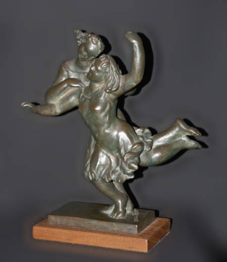
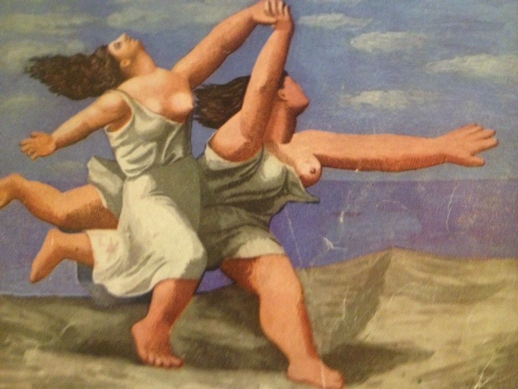

Zena Goldin Posever was an artist for as long as she could remember. The Philadelphia public school system offered her programs to help nurture her artistic talents. After high school she continued her studies at several Philadelphia art schools and colleges and informally at the Graphic Sketch Club. Life studies and figurative abstractions fill her early sketchbooks. At the Art Department of the urban Settlement Music School, for example, Zena learned how to create and apply colored patina to plaster from Antonio Cortizas and honed her teaching skills assisting him in art instruction to recovering hospital patients.
In 1937, Zena became a three-year scholarship student at the Pennsylvania Academy of the Fine Arts, the premier art school in America, which provided classical training as in Europe. She accomplished large- and small-scale sculptures and gained control of anatomy and mastery of composition. Her teachers, including the preeminent portrait sculptor Walker Hancock, drawing master George Demetrios and Albert Laessle, medal sculptor, recognized her talent and awarded her several prizes. In her final year, Zena became Cresson Scholar in Sculpture, the highest honor in the medium, which provided a traveling fellowship and precious studio space to continue working.
Her Favorite Sculpture
Zena’s subjects reveal her compassion for workers and their families, refugees and her love for music and creative expression. Play, 1939-40, an analogy of the happy childhood years she spent with her sister, was Zena’s favorite sculpture. Two girls are in motion while their flowing hair and dresses echo the movement of their fulsome torsos and limbs. The sculpture melds the two bodies as though they were one. Zena's kind and warm-hearted sister, close in age to her, was diagnosed with schizophrenia as a teenager. Though the family had spent a decade trying to get her help, there was no successful treatment at the time. The rhythmic and joyful Play recalls this family tragedy and was an outlet for Zena's first great loss.
Play, Bronze, 1939-40
The compositional inspiration for this sculpture stemmed from Zena’s visit to Picasso’s first American retrospective exhibition at the Museum of Modern Art in New York City. His Race painting in the exhibition captivated Zena, and the unparalleled Guernica, which remained at MOMA until after Franco’s death, had tremendous relevance to her life. She always made a point of paying homage to the canvas when she visited.
Picasso: Forty Years of his Art, "The Race" (1939 Exhibit Catalog Cover, detail)
The compositional inspiration for this sculpture stemmed from Zena’s visit to Picasso’s first American retrospective at the Museum of Modern Art in New York City. His Race painting in the exhibition captivated Zena, and the unparalleled Guernica, which remained at MOMA until after Franco’s death, had tremendous relevance to her life. She always made a point of paying homage to the canvas when she visited. Picasso began his anti-war response in 1936 days after the atrocity bombing of the cultural capital of the Basque region.
It was the prelude to World War II and represented the unimaginable horror of the Spanish Civil War. Zena’s husband of one year had gone to Spain as an American volunteer with the international brigades to fight for the Republicans against Franco’s Nationalists. One month after he got there, a sniper shot and killed him.